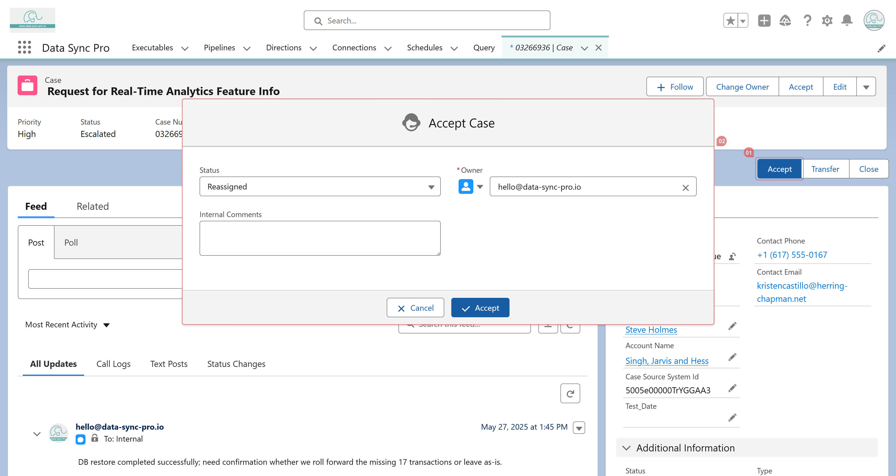

An #Action Button is a rules-driven Executable that packages input, transformation logic, and a target action into a single, modular configuration unit — letting users trigger meaningful business operations with one click.
The input can come from the current Lightning record, selected rows in a #Data List, a chained Data List, or no input at all (for global actions). The transformation logic is defined declaratively through field mappings, formulas, and 170+ built-in functions. The target action can be any supported DML or business operation — Insert, Update, Upsert, Delete, Merge, Lead Convert, Email/Bell Notification, Approval, and more — with an optional review step (Pre-Action Screen) before execution.
#Action Buttons can be placed as Quick Actions, surfaced as LWC button groups in Lightning App Builder, or attached directly to a #Data List as row- or list-level actions. With native Lightning integration, every #Action Button is a self-contained unit of work — easy to build, easy to reuse, and ready to act wherever users need it.
